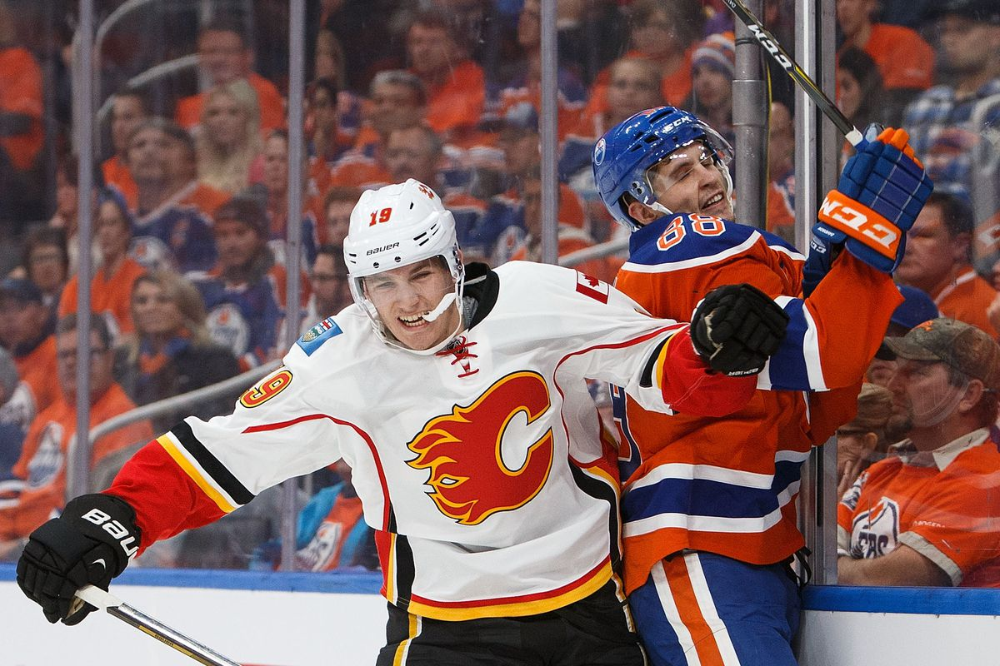

Matthew Tkachuk is an American professional ice hockey player currently playing with, and serving as an alternate captain for, the Calgary Flames of the National Hockey League. Tkachuk was selected sixth overall at the 2016 NHL Entry Draft by the Flames. - Wikipedia
Tkachuk has a strong hockey bloodline. His father is U.S. Hockey Hall of Fame forward Keith Tkachuk, who played 18 seasons in the NHL, and his brother, forward Brady Tkachuk, was the No. 4 pick in the 2018 NHL Draft. If that's not enough, he's also a cousin of New Jersey Devils general manager (and longtime NHL forward) Tom Fitzgerald as well as Philadelphia Flyers forward Kevin Hayes. - nhl.com